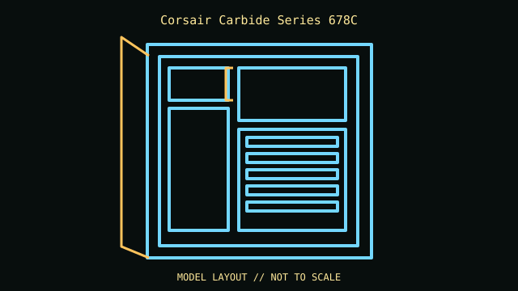

[ IDENTIFIED ENCLOSURE // E-ATX LOW-NOISE MID-TOWER ]
Corsair Carbide Series 678C
549 × 239 × 497 mm (L × W × H); E-ATX low-noise mid-tower. Board fit: Mini-ITX, microATX, ATX and E-ATX; seven expansion slots. GPU: Up to 370 mm. CPU cooler: 170 mm maximum CPU-cooler height. Radiator: Front up to 420 mm, roof up to 360 mm, rear up to 140 mm; a 420 mm front radiator requires removal of the 5.25-inch optical bay. PSU: ATX PSU up to 225 mm.

REVISION / CONFIGURATION CAVEAT: The 678C has hinged sound-damped panels and a modular ODD cage. Optical-bay retention, front radiator and drive cage positions are mutually constrained.
Mechanical specifications and fit
| Exact model | Corsair Carbide Series 678C — E-ATX low-noise mid-tower. |
|---|---|
| Dimensions and construction | 549 × 239 × 497 mm (L × W × H); see cited manufacturer page/manual for measured envelope and revision-specific detail. |
| Motherboard form-factor fit | Mini-ITX, microATX, ATX and E-ATX; seven expansion slots. |
| GPU clearance | Up to 370 mm. |
| CPU-cooler clearance | 170 mm maximum CPU-cooler height. |
| Radiator clearance | Front up to 420 mm, roof up to 360 mm, rear up to 140 mm; a 420 mm front radiator requires removal of the 5.25-inch optical bay. |
| PSU clearance | ATX PSU up to 225 mm. |
| Drive mounts | One 5.25-inch bay; six 3.5-inch drives with eight cage locations; three dedicated 2.5-inch mounts. |
Compatibility and service notes
Keep sound-damping panels, hinged front door, drive brackets and ODD-bay parts. Check the front USB-C cable and board header generation before installation.
- Check GPU length and thickness, its power-plug bend, cooler height and radiator/fan assembly against the same installed configuration; advertised maxima may conflict.
- Confirm motherboard standoffs match the board holes and inspect front-panel, USB and fan-controller headers before powering the build.
- Record the exact SKU, manual revision, removed brackets and unused drive hardware. Measure the individual chassis before shipping or fitting nonstandard parts.
Manufacturer and manual sources
- Corsair Carbide Series 678C — manufacturer product specificationsManufacturer product/model page; use the SKU and configuration that match the specimen.
- Corsair — Carbide Series 678C user manualModel-specific installation/manual reference for mounting diagrams and configuration limits.
Clearance limits describe separate manufacturer fit conditions; they are not a promise that all maximum-size parts fit simultaneously. Confirm the exact revision before purchase or installation.